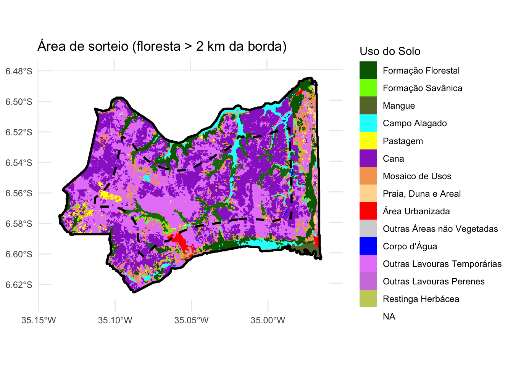

Mostrar código
library(terra) terra 1.9.1Mostrar código
library(tidyverse) ── Attaching core tidyverse packages ──────────────────────── tidyverse 2.0.0 ──
✔ dplyr 1.2.0 ✔ readr 2.2.0
✔ forcats 1.0.1 ✔ stringr 1.6.0
✔ ggplot2 4.0.2 ✔ tibble 3.3.1
✔ lubridate 1.9.5 ✔ tidyr 1.3.2
✔ purrr 1.2.1 ── Conflicts ────────────────────────────────────────── tidyverse_conflicts() ──
✖ tidyr::extract() masks terra::extract()
✖ dplyr::filter() masks stats::filter()
✖ dplyr::lag() masks stats::lag()
ℹ Use the conflicted package (<http://conflicted.r-lib.org/>) to force all conflicts to become errorsMostrar código
library(tidyterra)
Attaching package: 'tidyterra'
The following object is masked from 'package:stats':
filterMostrar código
library(landscapemetrics)
library(dplyr)
r_mataraca <- rast("2024covmataraca.tif")
crs(r_mataraca) #ver se tá em graus[1] "GEOGCRS[\"WGS 84\",\n ENSEMBLE[\"World Geodetic System 1984 ensemble\",\n MEMBER[\"World Geodetic System 1984 (Transit)\"],\n MEMBER[\"World Geodetic System 1984 (G730)\"],\n MEMBER[\"World Geodetic System 1984 (G873)\"],\n MEMBER[\"World Geodetic System 1984 (G1150)\"],\n MEMBER[\"World Geodetic System 1984 (G1674)\"],\n MEMBER[\"World Geodetic System 1984 (G1762)\"],\n MEMBER[\"World Geodetic System 1984 (G2139)\"],\n MEMBER[\"World Geodetic System 1984 (G2296)\"],\n ELLIPSOID[\"WGS 84\",6378137,298.257223563,\n LENGTHUNIT[\"metre\",1]],\n ENSEMBLEACCURACY[2.0]],\n PRIMEM[\"Greenwich\",0,\n ANGLEUNIT[\"degree\",0.0174532925199433]],\n CS[ellipsoidal,2],\n AXIS[\"geodetic latitude (Lat)\",north,\n ORDER[1],\n ANGLEUNIT[\"degree\",0.0174532925199433]],\n AXIS[\"geodetic longitude (Lon)\",east,\n ORDER[2],\n ANGLEUNIT[\"degree\",0.0174532925199433]],\n USAGE[\n SCOPE[\"Horizontal component of 3D system.\"],\n AREA[\"World.\"],\n BBOX[-90,-180,90,180]],\n ID[\"EPSG\",4326]]"Mostrar código
r_utmm <- project(r_mataraca, "EPSG:31985", method = "near")
legenda <- data.frame(
id = c(3, 4, 5, 11, 15, 20, 21, 23, 24, 25, 33, 41, 48, 50),
Categoria = c("Formação Florestal",
"Formação Savânica",
"Mangue",
"Campo Alagado",
"Pastagem",
"Cana",
"Mosaico de Usos",
"Praia, Duna e Areal",
"Área Urbanizada",
"Outras Áreas não Vegetadas",
"Corpo d'Água",
"Outras Lavouras Temporárias",
"Outras Lavouras Perenes",
"Restinga Herbácea"),
Cores = c("#006400", # 3. Floresta (Verde escuro)
"#7cfc00", # 4. Savânica (Verde claro)
"#687537", # 5. Mangue (Verde oliva)
"#00ffff", # 11. Campo Alagado (Ciano)
"#ffff00", # 15. Pastagem (Amarelo)
"#9932CC", # 20. Cana (Roxo vibrante, como combinamos)
"#f4a460", # 21. Mosaico de usos (Laranja/Areia)
"#ffda9e", # 23. Praia e Duna (Pêssego/Areia claro)
"#ff0000", # 24. Área Urbanizada (Vermelho)
"#d3d3d3", # 25. Outras não vegetadas (Cinza claro)
"#0000ff", # 33. Água (Azul)
"#e787f8", # 41. Outras Lavouras Temporárias (Lilás/Rosa)
"#d082de", # 48. Outras Lavouras Perenes (Roxo claro)
"#c8d068") # 50. Restinga (Verde amarelado)
)
# Aplica a nova legenda completassa ao mapa
levels(r_utmm) <- legenda[,1:2]
vetor_total <- as.polygons(r_utmm, dissolve = TRUE)
municipio_limite <- aggregate(vetor_total)
limite_seguro <- buffer(municipio_limite, width = -2000)
floresta <- vetor_total[vetor_total$Categoria == "Formação Florestal", ]
area_sorteio <- crop(floresta, limite_seguro)
if (is.list(area_sorteio)) {
area_sorteio <- do.call(rbind, area_sorteio)
}
if (nrow(area_sorteio) == 0) {
stop("Erro: Nenhuma floresta encontrada a mais de 2km da borda.")
}
ggplot() +
geom_spatraster(data = r_utmm) +
scale_fill_manual(values = legenda$Cores, na.value = "white", name = "Uso do Solo") +
geom_spatvector(data = floresta, fill = "darkgreen", alpha = 0.3, color = NA) +
geom_spatvector(data = area_sorteio, fill = "forestgreen", alpha = 0.5, color = NA) +
geom_spatvector(data = municipio_limite, fill = NA, color = "black", linewidth = 1) +
geom_spatvector(data = limite_seguro, fill = NA, color = "black", linetype = "dashed", linewidth = 1) +
labs(title = "Área de sorteio (floresta > 2 km da borda)") +
theme_minimal()